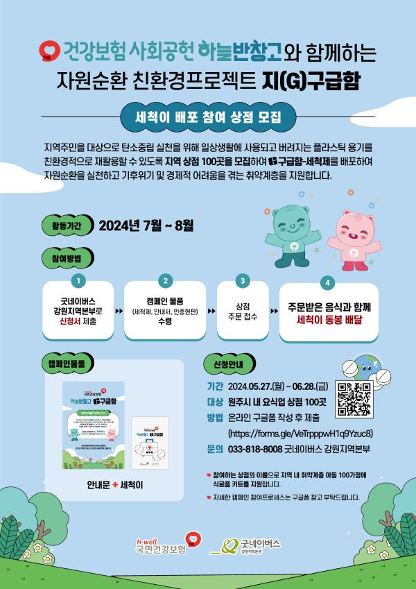

[착한상점모집]
2024년 국민건강보험 사회공헌 ’하늘반창고‘와 굿네이버스강원지역본부가 함께하는 자원순환 프로젝트 ’지(G)구급함‘에
사회적기업 #퀸비스토어가 함께 친환경 배달용기 세척제 “지(G)구급함 세척제”를 만들어 올바른 분리배출과 자원순환 실천하도록 협력하고 있는데요!
’지(G)구급함‘ 캠페인에 참여할 원주시 요식업 착한상점 100곳을 모집 소식을 공유합니다!
*지(G)구급함 캠페인??
지역주민을 대상으로 탄소중립 실천을 위해 일상생활에 사용되고 버려지는 플라스틱 용기를 친환경적으로 재활용할 수 있도록 지역 상점 100곳을 모집하여
친환경 배달용기 세척제 “지(G)구급함 세척제”를 배포하여 올바른 분리배출을 독려하여 자원순환을 실천하고
<굿네이버스강원지역본부>에서 참여한 상점에 이름으로 기후위기 및 경제적 어려움을 겪는 취약계층을 지원한다고 합니다.
*지(G)구급함 참여방법
1. QR코드 촬영, 참여신청서 작성
2. 캠페인 물품(세척이, 안내문, 인증현판)수령
3. 배달주문 시 주문받은 음식과 세척이 동봉 배달
4. <굿네이버스강원지역본부>에서 참여한 상점에 이름으로 취약계층 식료품 지원합니다
- 모집일정: 2024.5.27(월) ~ 6.28(금)까지
- 참여대상: 원주시 내 요식업 상점 100곳
- 신청방법: QR코드 촬영해서 참여신청서 작성
- 문 의 : 033-818-8008
* 참여혜택 :
1. 배달용기 세척제 “세척이” 100개 무료증전
2. 인증현판을 제공해드립니다(선착순100곳)